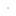

<!doctype html>
<html lang="en">
    <head>
        <meta charset="utf-8">
        <meta http-equiv="X-UA-Compatible" content="IE=edge">
        <meta name="viewport" content="initial-scale=1,user-scalable=no,maximum-scale=1,width=device-width">
        <meta name="mobile-web-app-capable" content="yes">
        <meta name="apple-mobile-web-app-capable" content="yes">
        <link rel="stylesheet" href="css/leaflet.css">
        <link rel="stylesheet" href="css/L.Control.Layers.Tree.css">
        <link rel="stylesheet" href="css/qgis2web.css">
        <link rel="stylesheet" href="css/fontawesome-all.min.css">
        <link rel="stylesheet" href="css/leaflet.photon.css">
        <style>
        html, body, #map {
            width: 100%;
            height: 100%;
            padding: 0;
            margin: 0;
        }
        </style>
        <title></title>
    </head>
    <body>
        <div id="map">
        </div>
        <script src="js/qgis2web_expressions.js"></script>
        <script src="js/leaflet.js"></script>
        <script src="js/L.Control.Layers.Tree.min.js"></script>
        <script src="js/leaflet.rotatedMarker.js"></script>
        <script src="js/leaflet.pattern.js"></script>
        <script src="js/leaflet-hash.js"></script>
        <script src="js/Autolinker.min.js"></script>
        <script src="js/rbush.min.js"></script>
        <script src="js/labelgun.min.js"></script>
        <script src="js/labels.js"></script>
        <script src="js/leaflet.photon.js"></script>
        <script src="data/MtCambriaWalkingPaths_2.js"></script>
        <script src="data/Landmarks_3.js"></script>
        <script>
        var highlightLayer;
        function highlightFeature(e) {
            highlightLayer = e.target;

            if (e.target.feature.geometry.type === 'LineString' || e.target.feature.geometry.type === 'MultiLineString') {
              highlightLayer.setStyle({
                color: 'rgba(255, 255, 0, 1.00)',
              });
            } else {
              highlightLayer.setStyle({
                fillColor: 'rgba(255, 255, 0, 1.00)',
                fillOpacity: 1
              });
            }
        }
        var map = L.map('map', {
            zoomControl:false, maxZoom:19, minZoom:12
        }).fitBounds([[-36.82613266445491,174.8000312084154],[-36.823455370309084,174.80445418369686]]);
        var hash = new L.Hash(map);
        map.attributionControl.setPrefix('<a href="https://github.com/qgis2web/qgis2web" target="_blank">qgis2web</a> &middot; <a href="https://leafletjs.com" title="A JS library for interactive maps">Leaflet</a> &middot; <a href="https://qgis.org">QGIS</a>');
        var autolinker = new Autolinker({truncate: {length: 30, location: 'smart'}});
        // remove popup's row if "visible-with-data"
        function removeEmptyRowsFromPopupContent(content, feature) {
         var tempDiv = document.createElement('div');
         tempDiv.innerHTML = content;
         var rows = tempDiv.querySelectorAll('tr');
         for (var i = 0; i < rows.length; i++) {
             var td = rows[i].querySelector('td.visible-with-data');
             var key = td ? td.id : '';
             if (td && td.classList.contains('visible-with-data') && feature.properties[key] == null) {
                 rows[i].parentNode.removeChild(rows[i]);
             }
         }
         return tempDiv.innerHTML;
        }
        // modify popup if contains media
        function addClassToPopupIfMedia(content, popup) {
            var tempDiv = document.createElement('div');
            tempDiv.innerHTML = content;
            var imgTd = tempDiv.querySelector('td img');
            if (imgTd) {
                var src = imgTd.getAttribute('src');
                if (/\.(jpg|jpeg|png|gif|bmp|webp|avif)$/i.test(src)) {
                    popup._contentNode.classList.add('media');
                    setTimeout(function() {
                        popup.update();
                    }, 10);
                } else if (/\.(mp3|wav|ogg|aac)$/i.test(src)) {
                    var audio = document.createElement('audio');
                    audio.controls = true;
                    audio.src = src;
                    imgTd.parentNode.replaceChild(audio, imgTd);
                    popup._contentNode.classList.add('media');
                    setTimeout(function() {
                        popup.setContent(tempDiv.innerHTML);
                        popup.update();
                    }, 10);
                } else if (/\.(mp4|webm|ogg|mov)$/i.test(src)) {
                    var video = document.createElement('video');
                    video.controls = true;
                    video.src = src;
                    video.style.width = "400px";
                    video.style.height = "300px";
                    video.style.maxHeight = "60vh";
                    video.style.maxWidth = "60vw";
                    imgTd.parentNode.replaceChild(video, imgTd);
                    popup._contentNode.classList.add('media');
                    // Aggiorna il popup quando il video carica i metadati
                    video.addEventListener('loadedmetadata', function() {
                        popup.update();
                    });
                    setTimeout(function() {
                        popup.setContent(tempDiv.innerHTML);
                        popup.update();
                    }, 10);
                } else {
                    popup._contentNode.classList.remove('media');
                }
            } else {
                popup._contentNode.classList.remove('media');
            }
        }
        var zoomControl = L.control.zoom({
            position: 'topleft'
        }).addTo(map);
        var bounds_group = new L.featureGroup([]);
        function setBounds() {
            map.setMaxBounds(map.getBounds());
            map.setMinZoom(map.getZoom());
        }
        map.createPane('pane_AerialImagery_0');
        map.getPane('pane_AerialImagery_0').style.zIndex = 400;
        var img_AerialImagery_0 = 'data/AerialImagery_0.png';
        var img_bounds_AerialImagery_0 = [[-36.82862690391376,174.79756634289973],[-36.82244520488211,174.80585289125304]];
        var layer_AerialImagery_0 = new L.imageOverlay(img_AerialImagery_0,
                                              img_bounds_AerialImagery_0,
                                              {pane: 'pane_AerialImagery_0'});
        bounds_group.addLayer(layer_AerialImagery_0);
        map.addLayer(layer_AerialImagery_0);
        map.createPane('pane_MtCambriaTerrain_1');
        map.getPane('pane_MtCambriaTerrain_1').style.zIndex = 401;
        var img_MtCambriaTerrain_1 = 'data/MtCambriaTerrain_1.png';
        var img_bounds_MtCambriaTerrain_1 = [[-36.82608774265917,174.80072160263197],[-36.82355861063588,174.80357066665422]];
        var layer_MtCambriaTerrain_1 = new L.imageOverlay(img_MtCambriaTerrain_1,
                                              img_bounds_MtCambriaTerrain_1,
                                              {pane: 'pane_MtCambriaTerrain_1'});
        bounds_group.addLayer(layer_MtCambriaTerrain_1);
        map.addLayer(layer_MtCambriaTerrain_1);
        function pop_MtCambriaWalkingPaths_2(feature, layer) {
            layer.on({
                mouseout: function(e) {
                    for (var i in e.target._eventParents) {
                        if (typeof e.target._eventParents[i].resetStyle === 'function') {
                            e.target._eventParents[i].resetStyle(e.target);
                        }
                    }
                },
                mouseover: highlightFeature,
            });
            var popupContent = '<table>\
                    <tr>\
                        <th scope="row">surface</th>\
                        <td class="visible-with-data" id="surface">' + (feature.properties['surface'] !== null ? autolinker.link(String(feature.properties['surface']).replace(/'/g, '\'').toLocaleString()) : '') + '</td>\
                    </tr>\
                    <tr>\
                        <th scope="row">Stairs</th>\
                        <td class="visible-with-data" id="stairs">' + (feature.properties['stairs'] !== null ? autolinker.link(String(feature.properties['stairs']).replace(/'/g, '\'').toLocaleString()) : '') + '</td>\
                    </tr>\
                    <tr>\
                        <td class="visible-with-data" id="path_name" colspan="2"><strong>Path name</strong><br />' + (feature.properties['path_name'] !== null ? autolinker.link(String(feature.properties['path_name']).replace(/'/g, '\'').toLocaleString()) : '') + '</td>\
                    </tr>\
                    <tr>\
                        <th scope="row">Length (m)</th>\
                        <td class="visible-with-data" id="length_m">' + (feature.properties['length_m'] !== null ? autolinker.link(String(feature.properties['length_m']).replace(/'/g, '\'').toLocaleString()) : '') + '</td>\
                    </tr>\
                    <tr>\
                        <th scope="row">Elevation gain/loss (m)</th>\
                        <td class="visible-with-data" id="Elev_Diff">' + (feature.properties['Elev_Diff'] !== null ? autolinker.link(String(feature.properties['Elev_Diff']).replace(/'/g, '\'').toLocaleString()) : '') + '</td>\
                    </tr>\
                    <tr>\
                        <th scope="row">Elevation change</th>\
                        <td>' + (feature.properties['elev_change'] !== null ? autolinker.link(String(feature.properties['elev_change']).replace(/'/g, '\'').toLocaleString()) : '') + '</td>\
                    </tr>\
                </table>';
            var content = removeEmptyRowsFromPopupContent(popupContent, feature);
			layer.on('popupopen', function(e) {
				addClassToPopupIfMedia(content, e.popup);
			});
			layer.bindPopup(content, { maxHeight: 400 });
        }

        function style_MtCambriaWalkingPaths_2_0(feature) {
            switch(String(feature.properties['path_type'])) {
                case 'Formal walking path':
                    return {
                pane: 'pane_MtCambriaWalkingPaths_2',
                opacity: 1,
                color: 'rgba(255,127,0,1.0)',
                dashArray: '',
                lineCap: 'square',
                lineJoin: 'bevel',
                weight: 3.0,
                fillOpacity: 0,
                interactive: true,
            }
                    break;
                case 'Informal Track':
                    return {
                pane: 'pane_MtCambriaWalkingPaths_2',
                opacity: 1,
                color: 'rgba(253,191,111,1.0)',
                dashArray: '',
                lineCap: 'square',
                lineJoin: 'bevel',
                weight: 2.0,
                fillOpacity: 0,
                interactive: true,
            }
                    break;
                case 'Shared access lane':
                    return {
                pane: 'pane_MtCambriaWalkingPaths_2',
                opacity: 1,
                color: 'rgba(217,95,2,1.0)',
                dashArray: '',
                lineCap: 'square',
                lineJoin: 'bevel',
                weight: 2.0,
                fillOpacity: 0,
                interactive: true,
            }
                    break;
            }
        }
        map.createPane('pane_MtCambriaWalkingPaths_2');
        map.getPane('pane_MtCambriaWalkingPaths_2').style.zIndex = 402;
        map.getPane('pane_MtCambriaWalkingPaths_2').style['mix-blend-mode'] = 'normal';
        var layer_MtCambriaWalkingPaths_2 = new L.geoJson(json_MtCambriaWalkingPaths_2, {
            attribution: '',
            interactive: true,
            dataVar: 'json_MtCambriaWalkingPaths_2',
            layerName: 'layer_MtCambriaWalkingPaths_2',
            pane: 'pane_MtCambriaWalkingPaths_2',
            onEachFeature: pop_MtCambriaWalkingPaths_2,
            style: style_MtCambriaWalkingPaths_2_0,
        });
        bounds_group.addLayer(layer_MtCambriaWalkingPaths_2);
        map.addLayer(layer_MtCambriaWalkingPaths_2);
        function pop_Landmarks_3(feature, layer) {
            layer.on({
                mouseout: function(e) {
                    for (var i in e.target._eventParents) {
                        if (typeof e.target._eventParents[i].resetStyle === 'function') {
                            e.target._eventParents[i].resetStyle(e.target);
                        }
                    }
                },
                mouseover: highlightFeature,
            });
            var popupContent = '<table>\
                    <tr>\
                        <td class="visible-with-data" id="name" colspan="2"><strong>Landmark name</strong><br />' + (feature.properties['name'] !== null ? autolinker.link(String(feature.properties['name']).replace(/'/g, '\'').toLocaleString()) : '') + '</td>\
                    </tr>\
                </table>';
            var content = removeEmptyRowsFromPopupContent(popupContent, feature);
			layer.on('popupopen', function(e) {
				addClassToPopupIfMedia(content, e.popup);
			});
			layer.bindPopup(content, { maxHeight: 400 });
        }

        function style_Landmarks_3_0() {
            return {
                pane: 'pane_Landmarks_3',
                radius: 2.0,
                opacity: 1,
                color: 'rgba(255,255,255,1.0)',
                dashArray: '',
                lineCap: 'butt',
                lineJoin: 'miter',
                weight: 1.0,
                fill: true,
                fillOpacity: 1,
                fillColor: 'rgba(96,96,126,1.0)',
                interactive: true,
            }
        }
        map.createPane('pane_Landmarks_3');
        map.getPane('pane_Landmarks_3').style.zIndex = 403;
        map.getPane('pane_Landmarks_3').style['mix-blend-mode'] = 'normal';
        var layer_Landmarks_3 = new L.geoJson(json_Landmarks_3, {
            attribution: '',
            interactive: true,
            dataVar: 'json_Landmarks_3',
            layerName: 'layer_Landmarks_3',
            pane: 'pane_Landmarks_3',
            onEachFeature: pop_Landmarks_3,
            pointToLayer: function (feature, latlng) {
                var context = {
                    feature: feature,
                    variables: {}
                };
                return L.circleMarker(latlng, style_Landmarks_3_0(feature));
            },
        });
        bounds_group.addLayer(layer_Landmarks_3);
        map.addLayer(layer_Landmarks_3);
        var overlaysTree = [
            {label: ' Landmarks', layer: layer_Landmarks_3},
            {label: 'Mt Cambria Walking Paths<br /><table><tr><td style="text-align: center;"></td><td>Formal walking path</td></tr><tr><td style="text-align: center;"></td><td>Informal Track</td></tr><tr><td style="text-align: center;"></td><td>Shared access lane</td></tr></table>', layer: layer_MtCambriaWalkingPaths_2},
            {label: "Mt Cambria Terrain", layer: layer_MtCambriaTerrain_1},
            {label: "Aerial Imagery", layer: layer_AerialImagery_0},]
        var lay = L.control.layers.tree(null, overlaysTree,{
            //namedToggle: true,
            //selectorBack: false,
            //closedSymbol: '&#8862; &#x1f5c0;',
            //openedSymbol: '&#8863; &#x1f5c1;',
            //collapseAll: 'Collapse all',
            //expandAll: 'Expand all',
            collapsed: true,
        });
        lay.addTo(map);
        setBounds();
        L.ImageOverlay.include({
            getBounds: function () {
                return this._bounds;
            }
        });
        </script>        
    </body>
</html>
